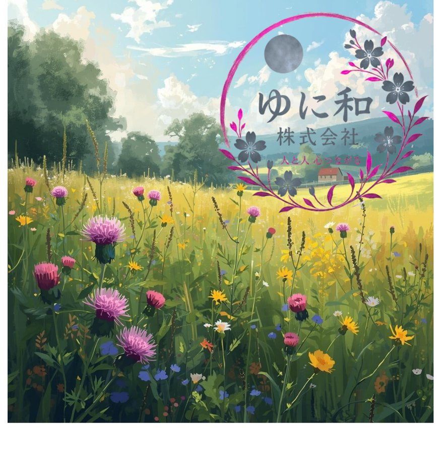
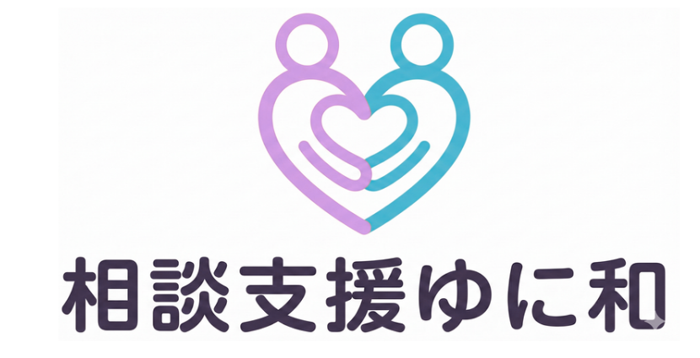
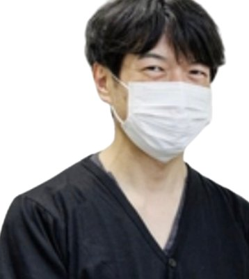

水巻相談支援事業所
福岡県遠賀郡水巻町の障がい福祉相談支援事業所
☎ 080-9193-8330
受付：火・水・金・土・日 9:30〜18:30
水巻相談支援事業所の前身にあたる事業所の記録です。
「相談支援ゆに和」（株式会社ゆに和）は、令和8年8月31日をもって事業を終了しました。
令和8年9月1日、事業者変更により「水巻相談支援事業所」として新たに指定を受け、相談支援を継続しております。ご利用者様は水巻相談支援事業所へ引き継がれており、現在ご相談を承っているのは水巻相談支援事業所です。
このページは、相談支援ゆに和が公開していた旧サイト（Canvaサイト）の内容を、記録として保存したものです。現在は営業しておりませんので、お問い合わせは水巻相談支援事業所のトップページよりお願いいたします。


人と人～心つながる～
西鉄 井尻駅近辺に事務所を構え、地域への定着を支援したり地域の課題について考えたりします。 障がいのある利用者さまとどのように、社会復帰や社会適応できるかを考えていきます。

精神科の看護師を14年経験しました。（看護歴はずっと）
その後、うつ病に罹患し7年半闘病します。
民間カウンセラー さがら療法（桂川町）で、うつ病の改善法を習うと同時に障がい福祉の世界に入ります。
考え方の自由とフリーランスの働き方を手に入れ、サービス管理責任者として実務してきました。
より深く障がい者の支援を行い、地域事業所との連携を深めたいと考え、相談支援事業所の開所の決意をしました。
また今後、同時に2つほどしたいことを行っていきたいと思います。どうぞよろしくお願いします。
| 事業所番号 | 4031200639 |
|---|---|
| 指定事業 | 指定特定相談支援事業／指定一般相談支援事業 |
聴看士（ちょうかんし）とは、心の仕組みをお伝えし、より幸せな考え方になる方法を、根拠を使って伝授する独自の資格制度です。
| 会社名 | 株式会社ゆに和 |
|---|---|
| 所在地 | 福岡県糟屋郡志免町志免中央3-7-8-208 |
| 設立日 | 令和8年1月5日 |
| 資本金 | 110万円 |
| 代表取締役 | 水口 徳明 （役員他1名） |
| 主な事業 | 障がい福祉サービス |
| 事業終了日 | 令和8年8月31日 |